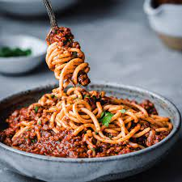

Lentil Bolognese

Description
Delicious vegetarian sauce for pasta, so tasty, and as nice as a meat bolognese. It can also be served with potatoes.
Ingredients
- 1 tablespoon olive oil, or to taste
- 1 onion, finely chopped
- 2 cloves garlic, crushed and finely chopped
- ½ red bell pepper, thinly sliced
- 1 carrot, cut into small cubes
- ½ cup red wine
- 1 (14 ounce) can diced tomatoe
- cup vegetable broth
- 1 (15 ounce) can green lentils, drained
- 1 teaspoon ground paprika, or more to taste
- 1 teaspoon dried basil, or more to taste
- 1 teaspoon dried oregano, or more to taste
- 1 teaspoon mixed dried herbs, or to taste
- 1 pinch ground nutmeg
Steps
- Heat olive oil in a large pot over medium heat. Cook and stir onion and garlic until soft, about 5 minutes. Stir in red bell pepper and carrot; cook for 4 to 5 minutes. Add mushrooms; cook and stir until softened, about 2 minutes.
- Pour wine into the pot; simmer until slightly reduced, about 1 minute. Stir in diced tomatoes and vegetable broth. Bring sauce to a boil; reduce heat and simmer until flavors combine, 10 to 15 minutes. Stir in lentils, paprika, basil, oregano, dried herbs, and nutmeg; cook until lentils are heated through, about 5 minutes.